Formatos de Servidores - Racks y Blades
Temas de ENCO · 1/2
- 1. Formatos de Servidores - Racks y Blades
- 2. Centros de Procesamiento de Datos (CPDs)
1.1 Racks
Un rack es un armario de dimensiones estandarizadas en el que se montan servidores, switches, discos o SAIs. Precisamente porque sus medidas son estándar, cualquier equipo "enrackable" de cualquier fabricante encaja en cualquier rack. Para servidores informáticos el ancho estándar es de 19 pulgadas (≈ 480 mm), mientras que en telecomunicaciones se usan racks de 23 pulgadas.
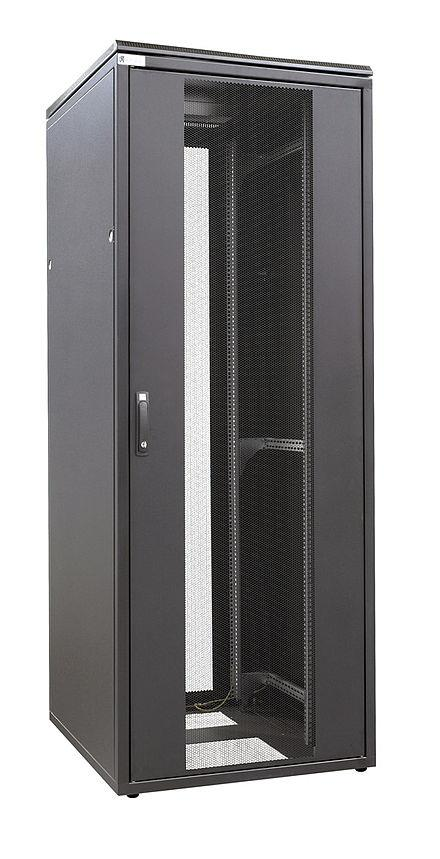
1.1.1 Unidad de rack (U)
La altura de los equipos también está estandarizada: siempre es múltiplo de 1,75" (44,45 mm), medida que se conoce como unidad de rack o U. Así se habla de equipos de 1U, 2U... y de racks de 42U, 26U... de altura; en un rack de 42U caben, por ejemplo, 42 servidores de 1U.
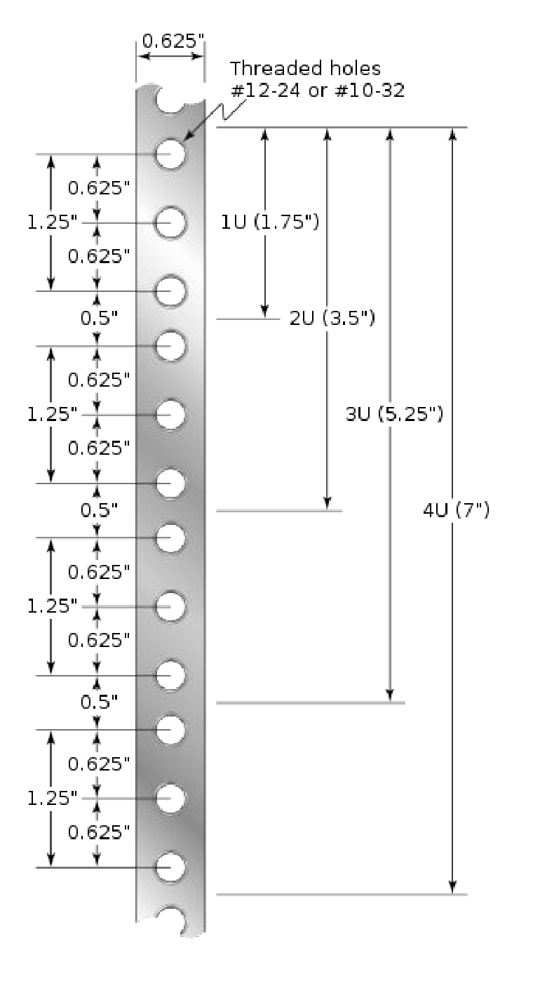
Cada U tiene 3 agujeros (0,625" + 0,625" = 1,25") más un hueco de 0,5" hasta la siguiente: 1,25" + 0,5" = 1,75". A la derecha, 1U = 1,75", 2U = 3,5", 3U = 5,25", 4U = 7".1.1.2 Montaje y fijación
Lo habitual es que el rack tenga 4 postes, uno en cada arista vertical, con agujeros espaciados regularmente a los que se fijan los equipos. Esos agujeros pueden tener rosca, pero se suele evitar, porque si una rosca se estropea hay que cambiar el poste entero.
Para entenderlo mejor
Installing HP Rails in a Threaded Hole Server Rack — montaje de raíles en un rack con agujeros roscados (vídeo, 2 min, inglés; enlazado en las diapositivas).
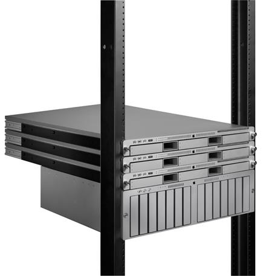
Una alternativa son los agujeros sin rosca en los que se encaja una tuerca enjaulada (cage nut): el tornillo del equipo se enrosca en ella y, si se daña, solo se cambia la tuerca.
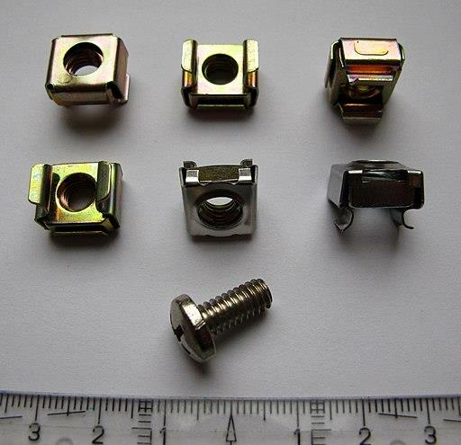
Para entenderlo mejor
Server Cage Nut installation — cómo se encaja una cage nut en el poste (vídeo, 1 min; enlazado en las diapositivas).
La otra opción son los agujeros cuadrados con montaje sin tornillos mediante raíles: el raíl se fija a los postes y el equipo se fija al raíl, de modo que se desliza como un cajón y es fácil sacarlo para mantenimiento. Los raíles no están estandarizados (cada fabricante tiene los suyos) y pueden incluir un sistema de retención que impide que el equipo se salga del todo.
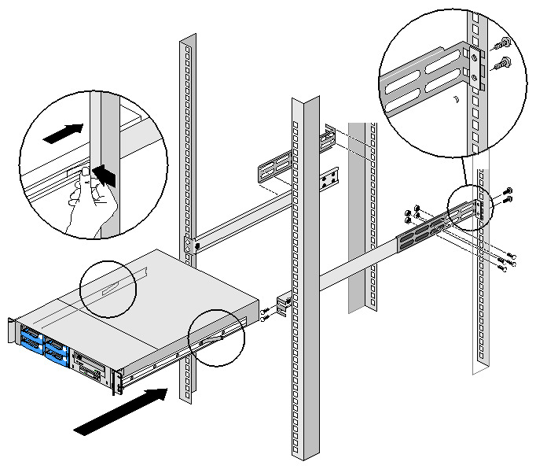
Para entenderlo mejor
HPE ProLiant DL360 Gen9 – How To Rack a Server — montaje completo de un servidor con raíles deslizantes, sin tornillos (vídeo, 4:30, inglés; enlazado en las diapositivas).
Para que los equipos quepan con holgura, su altura real es algo menor que la nominal: 1U mide 43,5 mm en lugar de 44, y 2U mide 88,1 mm en lugar de 89. El fondo de un rack de 4 postes, en cambio, no está estandarizado; los formatos habituales son 80 cm y 1 m. Existen también racks de 2 postes, en los que, al no haber postes traseros, los equipos se fijan equilibrados sobre su centro de masas.
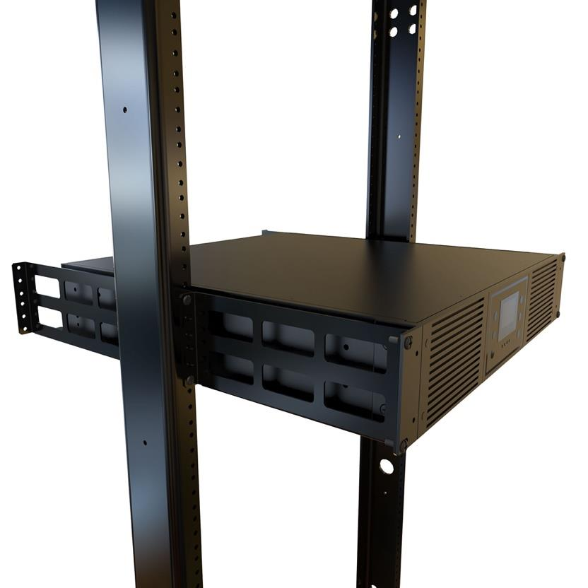
1.1.3 Cableado
Los cables deben mantenerse ordenados, porque una maraña dificulta el flujo de aire (los equipos se refrigeran peor) y complica el mantenimiento. Para ello conviene usar bandejas si el rack las tiene, abrazaderas y bridas para agrupar cables, y cables de la longitud exacta para que no sobren metros enrollados.
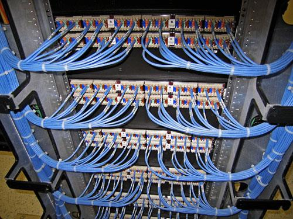
Para entenderlo mejor
Cabling a SoftLayer Data Center Server Rack — cableado real de un rack con bridas y longitudes ajustadas (vídeo, 4 min; enlazado en las diapositivas).
1.1.4 KVM (Keyboard, Video & Mouse)
Los servidores de un rack no tienen teclado, ratón ni monitor propios, porque sería un desperdicio tener uno por máquina. En su lugar, un switch KVM los conecta a un único teclado, monitor y ratón compartidos, y el administrador elige qué servidor controlar; algunos incluyen puertos USB. Hoy en día se puede acceder al switch KVM por IP y manejarlo desde un navegador web, sin estar delante. También existen bandejas enrackables que integran pantalla plegable, teclado y ratón.
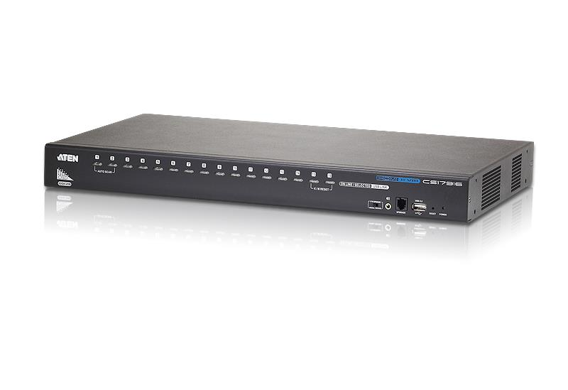
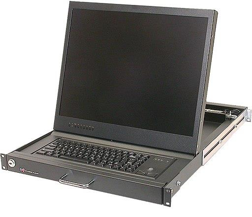
1.1.5 Puertas y ventilación
Las puertas protegen los servidores, pero dificultan la ventilación, así que se usan puertas perforadas que dejan pasar el aire. Esto es cada vez más importante, porque el calor que hay que disipar por rack no ha dejado de crecer a medida que los equipos se hacen más densos:
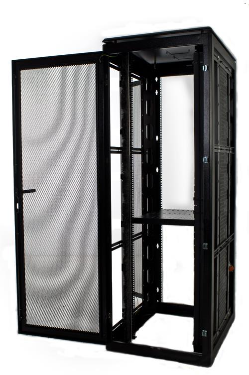
| Año | Contenido del rack | Potencia |
|---|---|---|
| 2000 | 28 servidores de 2U | 2 kW |
| 2002 | 42 servidores de 1U | 6 kW |
| 2006 | 6 Blade Centers | 24 kW |
| 2009 | Blades a plena carga | 40 kW |
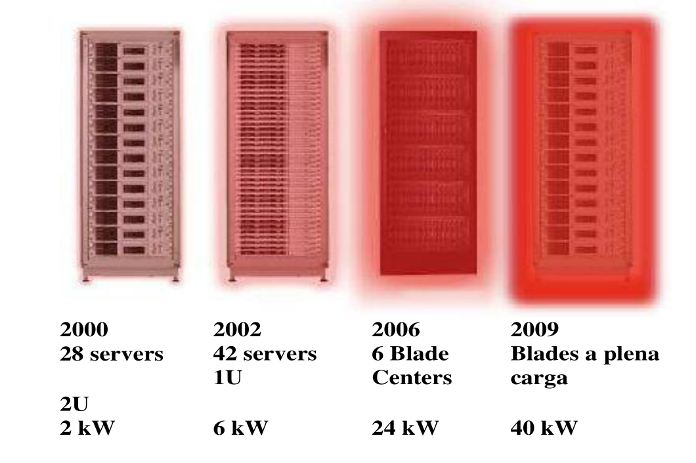
1.2 Servidores Blade
Un blade es un servidor simplificado al máximo para ocupar el mínimo espacio físico. No se monta directamente en el rack, sino que se inserta en un chasis, y es ese chasis el que es enrackable. El resultado es que caben más servidores por rack.
El chasis aloja uno o más blades y todo lo que estos comparten: fuentes de alimentación y ventiladores, un KVM opcional, los conectores del midplane, switches redundantes y un módulo de gestión. La idea clave es que el blade lleva solo lo imprescindible y casi todo lo demás está virtualizado y compartido en el chasis.
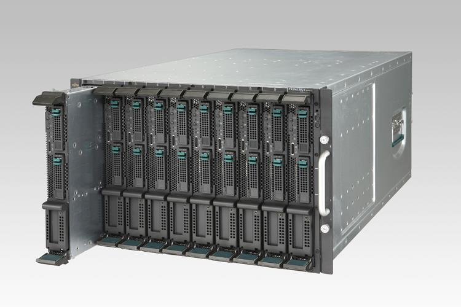
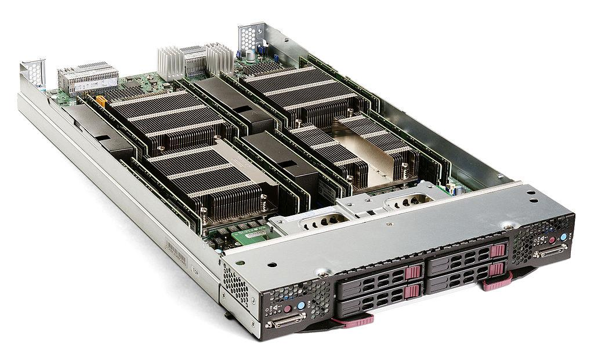
Un ejemplo real es el chasis Dell EMC PowerEdge M1000, con los blades por delante y las fuentes, ventiladores y módulos de switch por detrás:
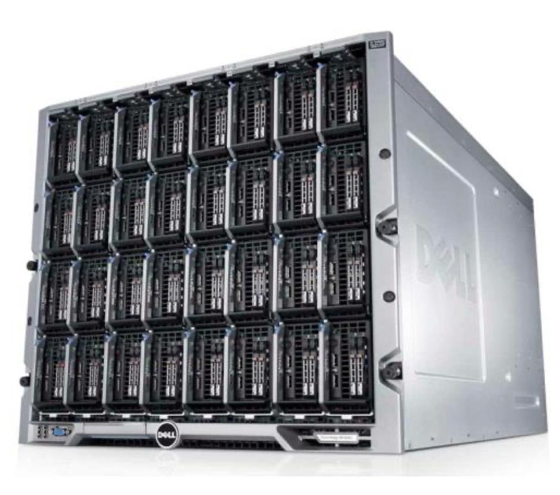
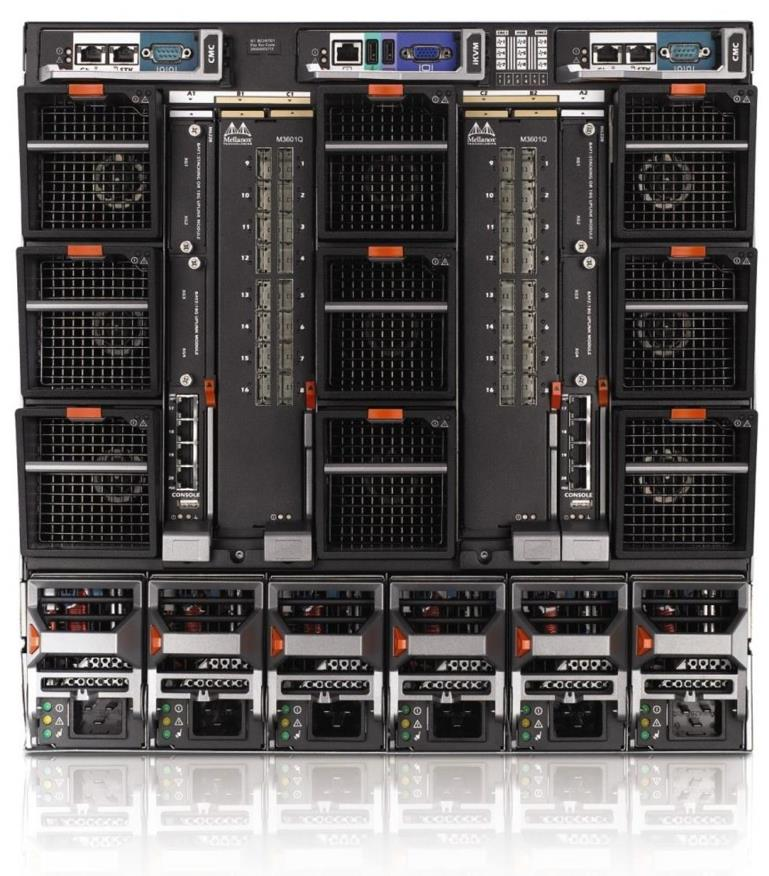
Para entenderlo mejor
¿Qué es un servidor Blade? — qué es un blade y cómo se inserta en el chasis (vídeo, 4:30).
1.2.1 Midplane
El midplane es la placa del chasis que da conectividad a los blades: cada blade se enchufa a ella y, a través de ella, llega a la red, la alimentación y la gestión. Por eso es una pieza clave en la virtualización de las conexiones. Su nombre viene de que está en mitad del chasis: los blades se conectan por una cara y los módulos por la otra. Normalmente los blades se insertan por el frontal y en vertical, aunque no siempre es así.
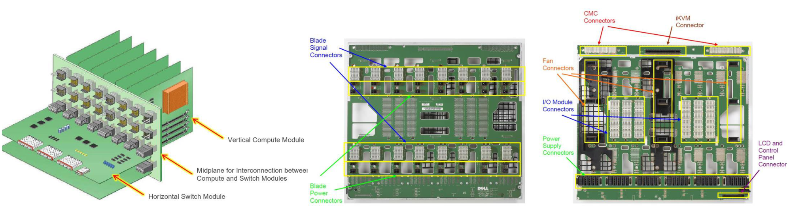
Blades (verticales) y módulos de switch (horizontales) se conectan a cada cara del midplane. En el centro y a la derecha, las dos caras de un midplane Dell: conectores de señal y alimentación de los blades por un lado; ventiladores, fuentes, módulos de E/S, iKVM y CMC (controlador del chasis) por el otro.1.2.2 Alimentación y refrigeración
Las fuentes de alimentación son compartidas y redundantes, de modo que si una falla las demás siguen alimentando todos los blades. Hay incluso chasis sin fuentes, que toman la corriente de un elemento enrackable dedicado solo a fuentes. Para los cortes de luz existen SAIs enrackables (baterías que mantienen la corriente), en formatos desde 3U, que permiten seguir funcionando varios minutos.
La refrigeración corre a cargo de ventiladores en el chasis, cuya velocidad ajusta el propio chasis según el calor generado; en algunos casos se usa refrigeración líquida.
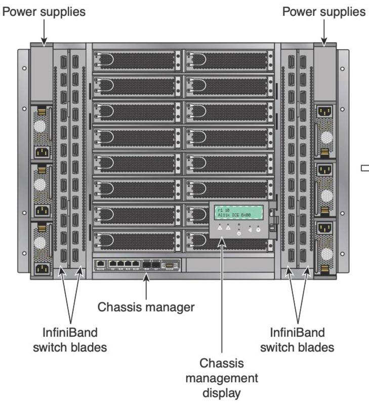
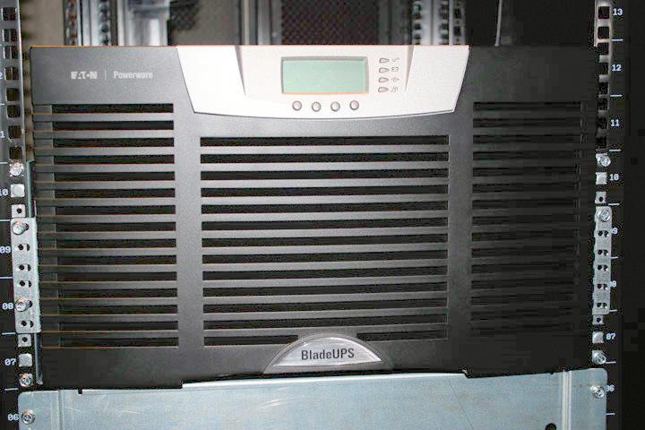
Izquierda: fuentes a los lados, switch blades InfiniBand y gestor del chasis con su pantalla. Derecha: SAI enrackable.1.2.3 Red y gestión
Las distintas conexiones (Ethernet, Fibre Channel, InfiniBand...) se implementan en el chasis y se virtualizan, y cada blade accede a ellas a través del midplane. Esta virtualización maximiza la utilización de la red, y para evitar puntos únicos de fallo se instalan 2 o 3 módulos de switches redundantes. Si ya se tienen switches y no se quiere comprar uno nuevo con el chasis, se usan módulos pass-through, que simplemente sacan los cables hacia un switch externo.
El módulo de gestión controla fuentes, ventiladores, switches y blades. Se comunica con cada elemento de forma out-of-band, es decir, por un canal propio y no por la red normal de datos, así que sigue funcionando aunque esta falle.
1.2.4 Almacenamiento
Los blades pueden llevar discos duros o no llevar ninguno. Los discos pueden ser externos conectados directamente (FireWire, SATA, e-SATA, FC o SCSI) o estar en red mediante iSCSI o FC. Muchas veces el almacenamiento también se virtualiza, con racks dedicados a discos integrados con el sistema de backup, o con chasis que solo contienen discos. Además de servidores, hay blades que contienen routers, switches, etc.
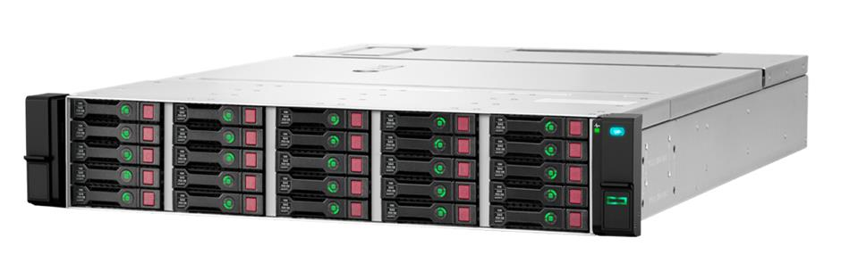
1.2.5 Ventajas, desventajas y uso
| Ventajas | Desventajas |
|---|---|
| Pequeño tamaño (< 1U por servidor) | Solo configuraciones que no disipen demasiado calor |
| Gestión fácil gracias a la virtualización | |
| Se instala en minutos y se sustituye fácilmente |
Los blades encajan especialmente bien con las aplicaciones scale-out, diseñadas para escalar horizontalmente añadiendo más servidores: si hace falta más capacidad, basta con insertar otro blade. Lo contrario es el scale-up, que consiste en aumentar la capacidad de un solo servidor (más CPU, más memoria).
Para entenderlo mejor
Scale-Up versus Scale-Out — diferencia entre mejorar una máquina y añadir más máquinas, con ejemplos (vídeo, 4 min, inglés).
Ejemplos de aplicaciones scale-out:
| Área | Ejemplos |
|---|---|
| Nube y virtualización | VMware vSphere, Hyper-V, KVM (hipervisor); Kubernetes, Docker Swarm; IaaS: AWS, Azure, OpenStack |
| Big Data | Hadoop, Spark, BigQuery; NoSQL: MongoDB, Cassandra; almacenamiento distribuido: Ceph, GlusterFS |
| Web y backend | Apache, Nginx, Caddy, LiteSpeed; Node.js; microservicios |
| BD escalables | BD relacionales en clúster: Oracle RAC, MySQL Cluster |
| HPC | Simulaciones con MPI; Deep Learning con TensorFlow y PyTorch en clústeres GPU |
| Streaming | Netflix, YouTube; CDN: Cloudflare, Akamai, Fastly |
1.2.6 Popularidad decreciente
Los blades se adoptaron rápidamente, pero desde 2015 las unidades vendidas por los grandes fabricantes (HPE, Dell, Cisco y Lenovo) no han parado de caer. La primera razón es que ya no son los más densos: un blade ocupa de media 0,86U por nodo, frente a 1U de un servidor rack, pero los servidores multinodo logran 0,5U por servidor (Lenovo mete 4 servidores en 2U). Además, su almacenamiento local es muy limitado, 2–6 discos por blade frente a 10–12 en un rack.
Tampoco ayuda que la E/S y las GPUs estén limitadas: cada chasis tiene diseños de E/S propios, lo que reduce los proveedores y retrasa la llegada de tecnologías nuevas, y muchas GPUs no se pueden instalar por consumo o tamaño. Por último está el coste: con servidores rack se paga solo por los servidores, sin el gasto adicional del chasis.
1.3 PC Blades
Los PC blades son ordenadores personales en formato blade: en lugar de tener el PC bajo la mesa de cada usuario, todos están centralizados en un chasis. Cada PC blade sirve a un único usuario y contiene placa, procesador, memoria y disco, con el KVM externo, en el thin client o en el propio blade. A diferencia de los blades de servidor, no comparten componentes (fuente, red, ventilación...): son unidades independientes que están en el chasis solo por conveniencia.
Centralizarlos facilita el mantenimiento y evita robos y accidentes, por lo que son interesantes en hospitales y ciertas industrias, y también permiten dar servicio a usuarios dispersos en varios edificios.
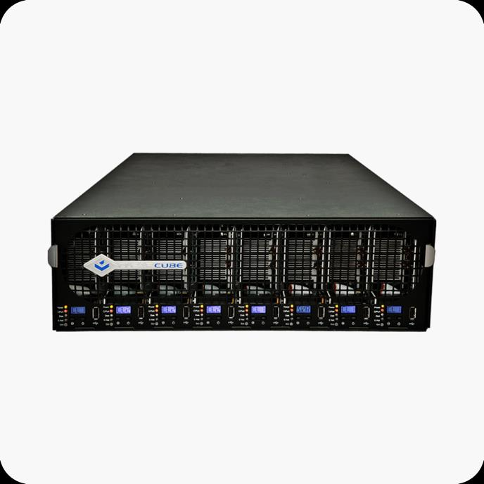
El usuario se conecta a su blade de dos formas. La primera es un módulo KVM unido al blade por cable de par trenzado (conexión corta), fibra (conexión local) o Ethernet (conexión remota). La segunda es un thin client, un computador mínimo que se encarga de gestionar la interacción entre el blade y el usuario.
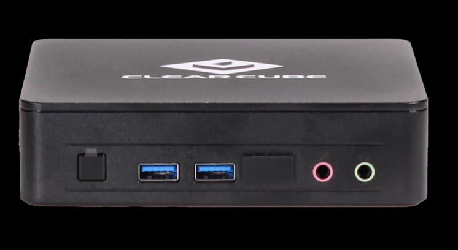
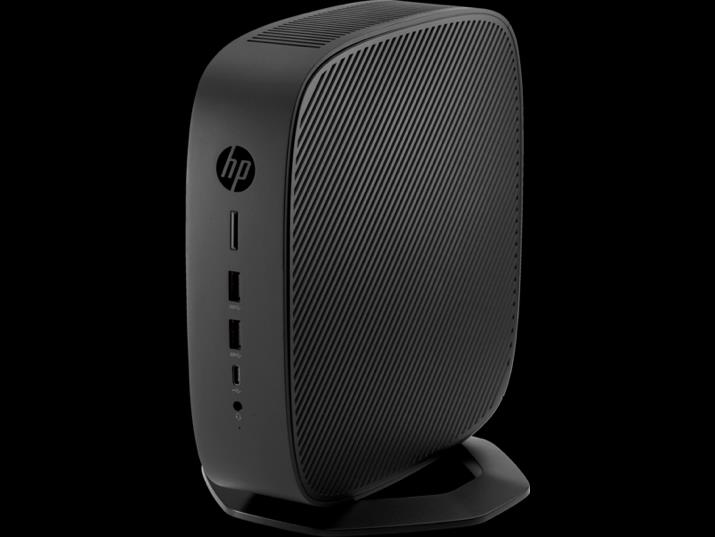
Por último, los PC blades también se pueden virtualizar, lo que permite compartirlos entre usuarios y soluciona su infrautilización (un PC dedicado a una sola persona está ocioso la mayor parte del tiempo).
1.4 Ideas clave
- Rack: 19" (23" en telecom); 1U = 1,75" = 44,45 mm; racks de 42U; fondo no estándar (80 cm / 1 m).
- Fijación: rosca, cage nuts o raíles (no estandarizados). 1U real = 43,5 mm.
- Cableado ordenado, KVM compartido (también por IP), puertas perforadas; calor por rack de 2 kW (2000) a 40 kW (2009).
- Blade: servidor mínimo en chasis enrackable que comparte fuentes, ventiladores, switches, KVM y gestión, conectado por el midplane; gestión out-of-band; pass-through a switches externos.
- Ventajas: densidad, gestión, sustitución rápida. Desventaja: calor. Ideal para scale-out.
- En declive desde 2015: multinodo más denso, poco almacenamiento, E/S y GPU limitadas, coste del chasis.
- PC blades: PCs centralizados que no comparten componentes; acceso por KVM o thin client; virtualizarlos evita infrautilización.